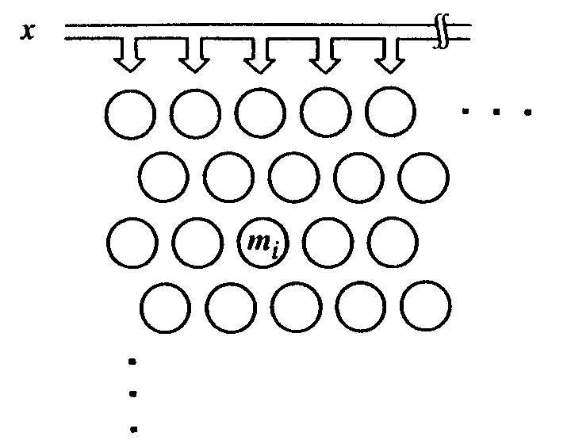
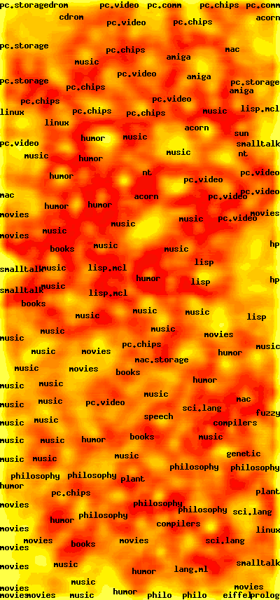

Kohnen Feature Map
self-organizing map
SS 2013
Richard Klemm (Informatik)
Neuronale Netze Seminar
Übersicht
- Einleitung
- Teuvo Kohonen
- Lernen
- Aufbau
- Begriffe
- Algorithmus
- Anwendungen
Einleitung
I just wanted an algorithm that would effectively map similar patterns (pattern vectors close to each other in the input signal space) onto contiguous locations in the output space
"It is a clustering, visualization, and abstraction method"
T. Kohonen(Self organizing maps; Prefaxe)
Teuvo Kohonen
Lernen
- Überwachtes Lernen
- Bestärkendes Lernen
- Unüberwachtes Lernen
Unüberwachtes Lernen
Dem System wird ein beliebiges Eingabeset präsentiert.
Es gibt keine Kontrolldaten
Ein Vertreter des unüberwachten Lernens ist das "competitive learning
Was wird dann eigentlich gelernt?
Und wie?
Aufbau

Begriffe
Winner-take-all
Topologie erhaltend
- Begriff aus der Mathemathik (Geometry)
- Beschreibt die bijektive Abbildung eines Geometry auf eine andere Geometry

Laterale Verbindungen
Verbindungen zwischen Neuronen in einer Schicht
SOM Neuron
- Feature Vector
- Position
There are no lateral connections between nodes within the lattice.
Nun endlich:
Der Algorithmus
Einzeiler
Schritte
- Initalisierung
- Trainingseingabe
- Bestimmung Best Matching Unit(BMU)
- Gewichtsupdate
Initialisierung
- Initialisierung des 3D-Eingaberaums
- Zufällige Initialisierung des 2D-Ausgaberaums
Trainingseingabe
Zufällige Auswahl von Daten aus dem Eingaberaum
Bestimmung BMU
- Rotieren des Ausgaberaum für einfachere Visualisierung
-
Auswahl der BMU
Gewichtsupdate
- Nachbarn der BMU auswählen
- Einfluss Topologiefunktion
- Lernfaktor
- Abstand zum Eingabevektor
Steps
- noch 296x
-
some Code
trainStep: () -> inputCube = this.selectInputCube() bestMatch = @outputGrid.findBestMatch(inputCube.color) neighbours = this.getNeighbours(bestMatch) this.moveCubes(neighbours) this.weightCubes(bestMatch, neighbours) @step += 1
Zusammenfassung
- Abbildung eines Raumes auf einen Anderen
- Beibehalten von Nachbarschaftsbeziehungen
- Gut geeignet für Visualisierung
Verbesserung
Fast Self-Organizing Feature Map Algorithm
3 Stages:
- K-Means
- Heuristic assignment strategy
- Standard SOM Algorithm refinement
Mu-Chun Su and Hsiao-Te Chang
Anwendungen
- Data Mining
- Visualisierungen
- ...
Anwendungen
WebSOM et. al(T. Keuhonen, 2000)
websom.hut.fi

de.gnovies.com
Anwendungen
Viele weitere
- Speedup of color palette Indexing
- Analysis of Fuzzy Membership Function Generation with Unsupervised Learning Using Self-Organizing Feature Map
- SOFM used for Speaker-Independent Speech Recogintion
- Multi-Layer Kohonen SOFM for Range Image Segementation
- Image Clustering using SOFM with refinement
- Amazon: Weitere Artikel für Sie